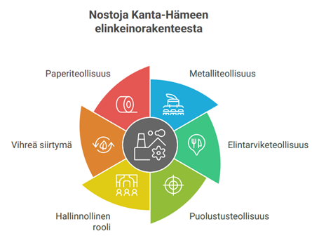
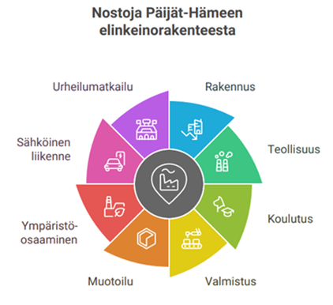

TULEVAISUUSLUOTAIN
Kanta-Häme
| Kanta-Hämeen elinkeinorakenne on monipuolinen. Metalliteollisuus, koneet ja laitteet sekä
paperin ja
kartonkituotteiden valmistus ovat merkittäviä työllistäjiä. Lisäksi elintarviketeollisuus
työllistää noin
joka kuudennen työssäkäyvän. Vaikka sekä yleinen talouden taantuma että erityisesti teollisuuden
haasteet
esimerkiksi energian ja raaka-aineiden hintojen nousun vuoksi ovat luoneet alueen metalli- ja
konepajateollisuudelle
haasteita, uusia mahdollisuuksia ja positiivisia signaaleita on näkyvissä. Maakunnassa toimivaa
puolustusteollisuuden keskittymää johdetaan Riihimäki-vetoisesti, mikä entisestään vahvistaa
maakunnan
yhteistä kilpailukykyä. Julkisen sektorin leikkauksista huolimatta Hämeenlinnalla on edelleen
vahva asema
hallinnollisena keskuksena. Vihreän siirtymän aurinko- ja tuulivoimahankkeet ennakoivat alueelle
tehtäviä investointeja.
Forssan seudun kiertotalouden osaamiskeskittymä vahvistaa alueen vihreää siirtymää.
*LÄHDE: Alueelliset kehitysnäkymät • 2025:19 |
 |
Päijät-Häme
|  |
Päijät-Hämeessä työllistäviä toimialoja ovat erityisesti rakentamisen ja teollisuuden toimialat.
Talonrakentaminen ja erikoistunut rakennustoiminta sekä sahatavaran, metallituotteiden sekä
koneiden ja laitteiden valmistus työllistävät alueella tuhansia henkilöitä. Maakunnassa toimii myös useita
elinvoimaisia toimialakeskittymiä. Toimialakeskittymien kannalta on olennaista, että alueella
toimivat elinvoimainen LUT-yliopisto ja LAB-ammattikorkeakoulu. Päijät-Hämeessä tavoitellaankin yritysten
TKI-investointien kaksinkertaistamista kahteensataan miljoonaan euroon vuoteen 2027 mennessä. Lahden seudulla on
vahva perinne valmistavassa teollisuudessa, elintarviketeollisuudessa, muotoilussa ja
ympäristövastuullisuudessa. Kestävä kehitys, ympäristöteknologian innovaatiot sekä hiilidioksidin talteenotto ja hyödyntäminen ovat
luomassa elinvoimaa ympäristöosaamisen keskittymälle. Lahdessa sijaitseva Muotoiluinstituutti on
merkittävä toimija teollisen muotoilun alalla. Alueen elinvoimaveturina toimii sähköisen liikenteen klusteri ja sen
kärkenä raskaan liikenteen sähköistämisratkaisuja valmistava Kempower. Myös liikunnan ympärille
rakentuva urheilumatkailu on merkittävä elinvoimatekijä.
*LÄHDE: Alueelliset kehitysnäkymät • 2025:19 |
Alueen työpaikat (Kunta, vuosittain)
Päivitetty: -
Hämeen ELY-keskuksen mediaseuranta
Hämeen ELY-keskuksen mediaseuranta on koottu ajankohtaisista uutisista ja tiedotteista. Mediaseurannassa on mukana Hämeen alueen merkittävimmät uutiset elinvoimasta, työvoimasta ja osaamisesta.Ostovoimaa, kulutushalua ja kasvua osoittavia indikaattoreita
Aloittaneita ja lopettaneita yrityksiä kuvaavia lukuja
Aloittaneet ja lopettaneet yritykset.
Huomioitavaa on että aloittaneita yrityksiä on noin kolmannes enemmän kuin lopettaneita yrityksiä. -Sama ilmiö toistuu koko maan-, sekä Hämeen alueella.
*Lähde: tilastokeskus
Tarkempi katsaus aloittaneisiin ja lopettaneisiin yrityksiin.
*Lähde: tilastokeskusToimialaerittely aloittaneista/lopettaneista yrityksistä.
Kanta-Hämeen Elinvoimakatsaus.
Hämeen liiton elinvoimakatsauksessa on ajankohtaiset tiedot mm. elinkeinon tilanteesta. Avaa uuteen ikkunaan *Copyright: Hämeen liitto